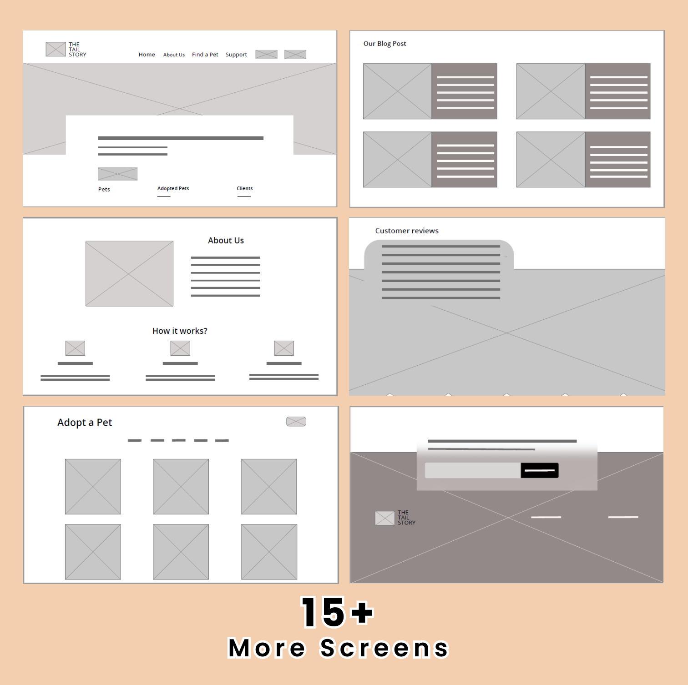

The Tail Story
- Pets,
- Adoption
04 Weeks
UX/UI Designer
12+
At-a-glance üëÄ
As a UX designer creating a pet adoption website for an animal shelter is multifaceted,
involving both research and design aspects.
By creating a user-centric and visually appealing website, I tried to help the shelter achieve its
mission of finding loving homes for animals.
Why Tail Story ?
Animal Shelters faces lack of an effective online presence and a user-friendly platform for pet adoption. The lack of a dedicated website makes it difficult for us to reach potential adopters and match them with the animals in our care.
Problem Statement
The problem faced by animal shelters is the lack of an effective online presence and a user-friendly platform for pet adoption. The lack of a dedicated website makes it difficult for us to reach potential adopters and match them with the animals in our care.
Solution
Creating a pet adoption website for an animal shelter is an effective way to connect potential pet adopters with animals in need of homes. It not only streamlines the adoption process but also helps the shelter build a strong online presence, engage with the community, and promote responsible pet ownership. Ultimately, it can lead to more successful adoptions and improved animal welfare.
Goal
To improve user experience, streamline the adoption process, encourage successful adoptions and reaching to the potential pet parents.
DESIGN RESEARCH:
This project is entirely based on developing a comprehensive pet adoption website that
offers a personalized and informative platform for potential adopters.
Our primary target audience includes individuals and families who are actively seeking to
adopt a pet and are open to adopting from an animal shelter. We will also cater to potential
volunteers, donors, and supporters who are passionate about animal welfare.
To gather information from potential users I conducted some user interview questions and Asked them about their needs, preferences, and any pain points they have experienced with existing adoption process or website.
Interview Questions
User interviews are a valuable way to gather insights and feedback from potential users of a pet adoption website for an animal shelter. Here are some user interview questions obtained:
- What motivated you to visit a pet adoption website? Are you looking to adopt a pet, or are you browsing for other reasons?
- What type of pet are you interested in (e.g., dog, cat, small animal, etc.)?
- What features or information are most important to you when searching for a pet to adopt?
- Have you ever used a pet adoption website before? If so, which ones?
- What features would make the website more user-friendly for you?
- How important is it for you to see detailed information and photos of each pet?
- How important is it for you to see detailed information and photos of each pet?
- What factors make you trust an animal shelter or adoption website?
- Is there anything you find frustrating or challenging when using pet adoption websites? Are there additional features or information you would like to see on the website?
- How often do you plan to visit the website while looking for a pet to adopt?
- Would you like the option to share pet profiles or information on social media platforms?
- Would you be interested in community events, pet care tips, or forums related to pet ownership on the website?
Executive Intent
This project is entirely based on developing a comprehensive pet adoption website that offers a personalized and informative platform for potential adopters. We will strive to showcase our animals by creating compelling profiles for each animal, including high-quality photos, detailed descriptions, and behavior assessments, to provide potential adopters with comprehensive information.
Target Audience
Our primary target audience includes individuals and families who are actively seeking to adopt a pet and are open to adopting from an animal shelter. We will also cater to potential volunteers, donors, and supporters who are passionate about animal welfare.
General Tasks
The Major tasks is Adoption of pets. Other than that users can browse through different sections and categories of Pet listings for detailed descriptions about pets, Search and filtering option, Adoption Applications, Adoption Process, Volunteer and Foster opportunities, Donation options, Lost and Found section, Social Media integrations, Contact Information.
Technology Constraints
Internet, Smartphones are required, Browser compatibility, small tows might have network issues.
General Tasks
The Major tasks is Adoption of pets. Other than that users can browse through different sections and categories of Pet listings for detailed descriptions about pets, Search and filtering option, Adoption Applications, Adoption Process, Volunteer and Foster opportunities, Donation options, Lost and Found section, Social Media integrations, Contact Information.
Cross Channels
All Platforms; Android, iOS, and web platforms. It can work on Laptops or Tablets. üåê üì± üíª
Marketing / Branding Goals
- Increase Pet Adoptions: Measure the number of successful pet adoptions and set targets to increase this number over time
- Improving user experience: Upgrade the usability and functionality of the website to provide a seamless and enjoyable user experience.
- Expanding user base: Focus on attracting and engaging a larger audience of potential pet adopters.
- Increase website traffic: Enhance the visibility of the pet adoption website by implementing various online marketing tactics such as (SEO), content marketing, social media advertising, and online partnerships
- Build brand awareness: Develop a consistent visual identity, including a recognizable logo, color scheme, and typography, and use it across all marketing channels.
IDEATE
Idea Brainstorming
User Friendly Interface:
- Simple and intuitive design for easy navigation.
- Clear categories for different animal types (dogs, cats, small animals, etc.).
- Search filters for age, size, breed, and location.
- "Featured Pets" section on the homepage to showcase special animals.
Pet Profiles:
- Each pet has a detailed profile with high-quality photos and videos.
- Information about the pet's personality, behavior, and medical history.
- Adoption status and availability.
Adoption Process:
- Step-by-step guide for adopting a pet.
- Online application forms for interested adopters.
- Details about adoption fees, what's included, and any required documents.
Responsive Design:
- Ensure the website is responsive and works well on various devices, including smartphones and tablets.
- Consider developing a website for easier access to pet profiles, notifications, and updates.
Volunteer and Donate:
- Information about volunteering opportunities.
- Easy-to-access donation section with options for one-time or recurring donations.
Events:
- Calendar of adoption events, fundraisers, and community activities.
- Blog section with updates about the shelter and animal care.
Foster Programs:
- Details about fostering pets and its importance.
- How to become a foster parent.
Educational Resources:
- Tips for pet care, training, and health.
- Educational articles about different animal breeds and behavior.
Success Stories:
- Heart-warming stories and photos of pets that found forever homes.
- Testimonials from happy adopters.
Live Chat:
- Provide a live chat feature to answer questions in real-time and assist users with their inquiries.
Social Media Integration:
- Links to the shelter's social media profiles for wider reach.
- Sharing buttons on pet profiles for easy sharing.
Affinity Mapping
PROTOTYPING
Low Fidelity Prototype
High Fidelity Prototype

Final Designs
TAKEAWAYS
Impact
✔️The ultimate goal of this pet adoption website is to create an emotional connection between potential adopters and the animals, while also providing a seamless user experience that encourages action.
What I learned
✔️ The user needs and user feedback is very much important in making of a successful web design.
FEEDBACK & SOLUTIONS
❓ Potential adopters need comprehensive information about each pet to make an informed decision.
üí° I created individual profiles for each pet with high-quality photos, a detailed description of their personality, age, medical history, and any special needs. Include a 'Meet the Pet' video if possible to showcase their behavior and interactions.
❓ Users need to understand the adoption process clearly.
üí° I created a step-by-step guide to the adoption process, including requirements, application forms, fees, and any necessary paperwork. Offer a way for users to schedule visits and meet-and-greets with the pets.